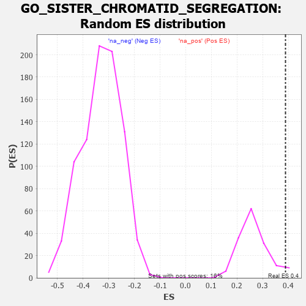

| | | Dataset | 7d |
| Phenotype | NoPhenotypeAvailable |
| Upregulated in class | na_pos |
| GeneSet | GO_SISTER_CHROMATID_SEGREGATION |
| Enrichment Score (ES) | 0.38866666 |
| Normalized Enrichment Score (NES) | 1.4619799 |
| Nominal p-value | 0.038709678 |
| FDR q-value | 0.3192877 |
| FWER p-Value | 1.0 |
Table: GSEA Results Summary
 Fig 1: Enrichment plot: GO_SISTER_CHROMATID_SEGREGATION
Fig 1: Enrichment plot: GO_SISTER_CHROMATID_SEGREGATION
Profile of the Running ES Score & Positions of GeneSet Members on the Rank Ordered List
| PROBE | GENE SYMBOL | GENE_TITLE | RANK IN GENE LIST | RANK METRIC SCORE | RUNNING ES | CORE ENRICHMENT | | 1 | TEX14 | | | 164 | 1.179 | 0.0314 | Yes |
| 2 | BUB3 | | | 172 | 1.143 | 0.0811 | Yes |
| 3 | AXIN2 | | | 383 | 0.713 | 0.0861 | Yes |
| 4 | CDC20 | | | 480 | 0.644 | 0.1025 | Yes |
| 5 | KIF23 | | | 522 | 0.622 | 0.1248 | Yes |
| 6 | HIRA | | | 568 | 0.608 | 0.1460 | Yes |
| 7 | CCNB1 | | | 581 | 0.601 | 0.1711 | Yes |
| 8 | NDC80 | | | 616 | 0.590 | 0.1929 | Yes |
| 9 | AURKC | | | 633 | 0.583 | 0.2167 | Yes |
| 10 | SMC2 | | | 667 | 0.570 | 0.2377 | Yes |
| 11 | MRE11 | | | 693 | 0.560 | 0.2593 | Yes |
| 12 | CDC6 | | | 709 | 0.557 | 0.2821 | Yes |
| 13 | RAD21 | | | 779 | 0.538 | 0.2972 | Yes |
| 14 | HDAC8 | | | 881 | 0.510 | 0.3070 | Yes |
| 15 | POGZ | | | 887 | 0.509 | 0.3289 | Yes |
| 16 | PSMG2 | | | 1018 | 0.480 | 0.3337 | Yes |
| 17 | REC8 | | | 1028 | 0.478 | 0.3537 | Yes |
| 18 | STAG2 | | | 1069 | 0.470 | 0.3694 | Yes |
| 19 | PDS5B | | | 1432 | 0.403 | 0.3415 | Yes |
| 20 | CHMP7 | | | 1435 | 0.403 | 0.3590 | Yes |
| 21 | CDC27 | | | 1585 | 0.377 | 0.3569 | Yes |
| 22 | ESPL1 | | | 1734 | 0.349 | 0.3536 | Yes |
| 23 | WAPL | | | 1758 | 0.344 | 0.3659 | Yes |
| 24 | NUP62 | | | 1871 | 0.324 | 0.3661 | Yes |
| 25 | CUL3 | | | 1893 | 0.321 | 0.3776 | Yes |
| 26 | ZW10 | | | 1973 | 0.309 | 0.3813 | Yes |
| 27 | CENPE | | | 2086 | 0.293 | 0.3801 | Yes |
| 28 | INO80 | | | 2120 | 0.288 | 0.3887 | Yes |
| 29 | FEN1 | | | 2446 | 0.237 | 0.3580 | No |
| 30 | CDT1 | | | 2505 | 0.226 | 0.3607 | No |
| 31 | VPS4A | | | 2654 | 0.205 | 0.3510 | No |
| 32 | PHB2 | | | 2712 | 0.197 | 0.3525 | No |
| 33 | RIOK2 | | | 2775 | 0.187 | 0.3530 | No |
| 34 | BECN1 | | | 2828 | 0.179 | 0.3543 | No |
| 35 | KIF4B | | | 2965 | 0.155 | 0.3440 | No |
| 36 | LCMT1 | | | 3576 | 0.063 | 0.2696 | No |
| 37 | SMC3 | | | 3701 | 0.042 | 0.2558 | No |
| 38 | CDC16 | | | 3724 | 0.038 | 0.2547 | No |
| 39 | PRC1 | | | 3841 | 0.021 | 0.2410 | No |
| 40 | NEK2 | | | 3871 | 0.016 | 0.2380 | No |
| 41 | NIPBL | | | 3900 | 0.010 | 0.2349 | No |
| 42 | TOP2B | | | 3938 | 0.005 | 0.2304 | No |
| 43 | CHMP6 | | | 3977 | -0.003 | 0.2258 | No |
| 44 | RRS1 | | | 4256 | -0.051 | 0.1929 | No |
| 45 | PCID2 | | | 4258 | -0.051 | 0.1950 | No |
| 46 | RAN | | | 4299 | -0.059 | 0.1926 | No |
| 47 | PINX1 | | | 4515 | -0.097 | 0.1697 | No |
| 48 | APC | | | 4558 | -0.107 | 0.1691 | No |
| 49 | ESCO2 | | | 4605 | -0.119 | 0.1685 | No |
| 50 | SMC1A | | | 4609 | -0.120 | 0.1734 | No |
| 51 | FBXW7 | | | 4816 | -0.161 | 0.1545 | No |
| 52 | SMC4 | | | 4916 | -0.180 | 0.1500 | No |
| 53 | ATRX | | | 4929 | -0.184 | 0.1566 | No |
| 54 | CHMP5 | | | 4952 | -0.188 | 0.1622 | No |
| 55 | DDX11 | | | 5102 | -0.225 | 0.1533 | No |
| 56 | DCTN2 | | | 5175 | -0.243 | 0.1549 | No |
| 57 | ATM | | | 5210 | -0.249 | 0.1616 | No |
| 58 | TOP2A | | | 5216 | -0.250 | 0.1720 | No |
| 59 | LATS1 | | | 5412 | -0.298 | 0.1606 | No |
| 60 | CDC23 | | | 5756 | -0.394 | 0.1346 | No |
| 61 | PLK1 | | | 6082 | -0.500 | 0.1157 | No |
| 62 | TNKS | | | 6138 | -0.516 | 0.1315 | No |
| 63 | BOD1 | | | 6320 | -0.583 | 0.1344 | No |
| 64 | TPR | | | 6597 | -0.709 | 0.1309 | No |
| 65 | PIBF1 | | | 7049 | -0.966 | 0.1166 | No |
Table: GSEA details [plain text format]

Fig 2: GO_SISTER_CHROMATID_SEGREGATION: Random ES distribution
Gene set null distribution of ES for GO_SISTER_CHROMATID_SEGREGATION